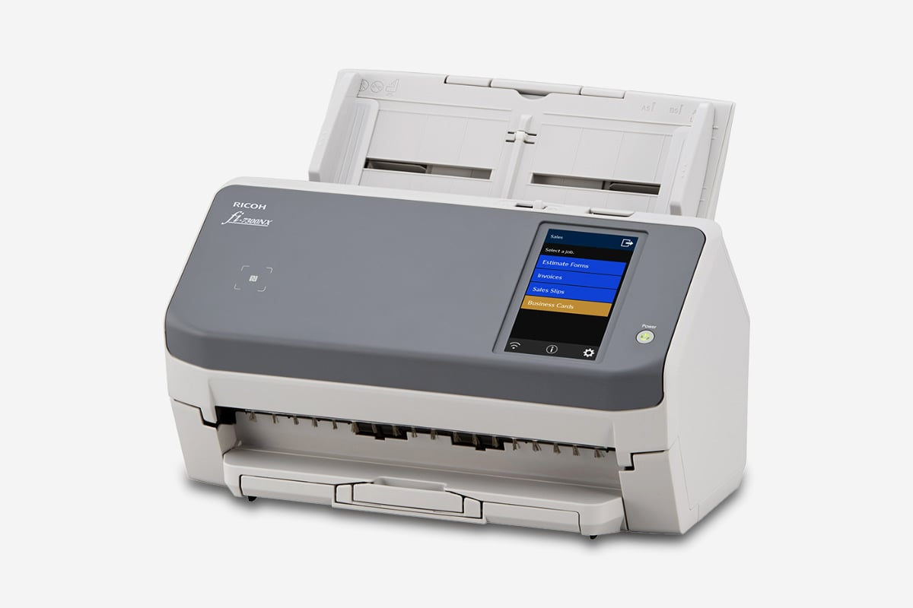

Home Scanning in 2026
Contents
tl;dr
I found a wireless document scanner that natively speaks HTTP (Ricoh fi-7300NX), and hooked it to my Linux server without any driver, proprietary software, or quality limitation.
Background
7 years ago, I got myself a Brother DS-720 portable scanner have been using it day-to-day for receipt and occasionally for document as it sits right on my desk. Meanwhile, I have one or two other scanners available through my printer. They work, but not perfectly.
The rollers in DS-720 are worn out a bit. It idles on very smooth papers, meaning distortion, extra work, and sometimes damages. It requires manual feeding, which is a bit tedious, especially when I got a huge backlog of receipts. The work can only take place on my desk with cables plugged in, workstation on, drivers installed, and special software running.
Objective
It’s 2026. Surely things should be much better. There must be lots of options that operates standalone and wirelessly, just like those big scanners in enterprise environments – I feed it with a stack of paper, maybe press one or two buttons, and work done. No wired connection. No proximity to a computer. No human interaction with another device.
You might think, “Ah, I know many scanners that have that.” But the story turns out to be a bit more complex.
Market overview
So what are the big players on the market? A quick search reveals Brother, Canon, Epson and PFU (Ricoh, Fujitsu).
The common form factors are flatbed, ADF, portable, and special for passport, large format, cheque, etc.
My primary objective here is productivity, so I need an ADF.
Some random observations from fine prints:
- Pretty much all ADF scanners scan up to 600dpi regardless of price range. Those “1200dpi” is typically interpolated.
- The advertised speed is usually measured at 200dpi or 300dpi, while 600dpi job can easily take over 3x time.
- Max quality and paper size of network scanners are commonly only available under USB connection.
- Some seemingly compact model may actually be quite heavy and big.
- Most ADF scanners have CIS sensors while a few got CCD. CCD allegedly has a better color accuracy but also bigger, heavier, and more power-starving.
Some potentially useful features:
- Paper guide
- Ultrasonic multifeed sensor
- Automatic paper separation
- Automatic skew correction
- Long receipt support
- Plastic card support
Options
As a penny-pincher, all of them seem expensive, so I’ll be focusing primarily on the second-hand market.
However, thanks to the shining economy of the United Kingdom, there aren’t a lot of bankrupt business desperately trying to getting rid of their scanners. Damn.
Those easiest to get are SnapScan iX500 and fi-6130, plus couple of other options:
| Model | Released in | Price | Speed @300dpi | Speed @600dpi | Long page | Connectivity | Linux Driver |
|---|---|---|---|---|---|---|---|
| SnapScan iX500 | 2013 | £100-£150 | 25ppm | 7ppm | 863mm | USB, 802.11b/g/n | sane (no Wi-Fi) |
| Fujitsu fi-6130 | 2008 | £50-£90 | 30ppm | 216x863mm, 210x3048mm | USB | sane | |
| Fujitsu SP-11{20,25,30}{N,} | 2015/2020(N-models) | £50-£150 | 20/25/30ppm | 3048mm | USB, Ethernet (N-models only) | official | |
| SnapScan iX1400/1500/1600 | 2021/2018/2021 | £150+ | 40/30/40ppm | 10/8/10ppm | 3000mm | USB / USB, 802.11b/g/n / USB, 802.11b/g/n | sane (no Wi-Fi) |
| Brother ADS-2400N | 2015 | £100-£150 | 30ppm | 5000mm | USB, Ethernet | official | |
| Brother ADS-4100/4300N | 2022 | £150+ | 35/40ppm | 5000mm | USB / USB, Ethernet | official | |
| Epson DS-520 | 2014 | £50-£100 | 30ppm | 7ppm | 215x914mm | USB, Ethernet (optional) | sane |
| Epson DS-530 | 2016 | £100-£150 | 35ppm | 215.9x6096mm | USB, Ethernet (optional) | sane | |
| Epson DS-570W | 2016 | ~£150 | 35ppm | 215.9x6096mm | USB, Ethernet, 802.11b/g/n | sane |
All of above have CIS sensor, support color, duplex, up to A4 size, and up to 600dpi optical resolution, with the only exception that fi-6130 has CCD sensor.
Compromise
As said in the very beginning, I want it to operate standalone and wirelessly. Getting rid of power cord can be hard, and I’m happy for that to be an exception.
You might think wireless capability doesn’t matter – we can easily bridge it with a Raspberry Pi or something similar. Then you may find yourself struggling for an ARM driver that is not for macOS 1, and suffering from the slower cold start and reduced portability from 2 extra cables and 1 extra power adapter.
Native Wi-Fi support tends to come with a decent premium, compared to how cheap it is nowadays to implement that. What’s worse is that paying for the premium won’t make my life better: they tend to have worse support in Linux driver, capped scanning quality, and reduced page size limit. This feels quite off-putting.
Quality and long receipt are must-have for me. Shall I go back to a wired portable scanner? ADF and speed do also matter. So maybe fi-6130 with some Wi-Fi bridge? Or SP-1130N over Ethernet with driver in a VM?
Uncompromise
While I was struggling with the compromise, a fi-7300NX tagged £200 came into my attention:
- It scans up to a length of 5588mm. Ok.
- It supports USB, Ethernet, 802.11 a/b/g/n/ac. Good.
- It’s fast (60ppm @ 300dpi). Nice.
- It has a touch screen. Great.
- It doesn’t have a Linux driver. Hmmmm…
- But it natively speaks HTTP(S). Wow!
This delivers exactly what I wanted: fully standalone and wireless operation, and even better, without needing a driver!
This is a really unique model. It doesn’t have a predecessor or successor in 6xxx / 8xxx series, or a sibling in 7xxx series. While many newer models in 8xxx series do also speak HTTP(S), fi-7300NX appears to be the ONLY one over the whole history of fi- series that has wireless capability.

Deshitification
While fi-7300NX speaks HTTP(S), its server PaperStream NX Manager doesn’t support Linux. So we just need to put in this last piece of puzzle – how hard could it be to reimplement something over HTTP?
Let’s first download PaperStream NX Manager. We need to select Operating System. Let’s choose Windows 11. What? There is no PaperStream NX Manager to download. Turns out we’ll have to choose some Windows Server, not plain Windows. Ok, now it’s there. Let’s click “Download”. What? “Submit the SER. NO. of the scanner to download the software.” My scanner was still en-route but I managed to find one from some ebay listing.
Now I have this 600MB installer. Let’s run it in a Windows 11 VM, and it failed. Turns out it needs IIS etc. and really doesn’t support plain Windows. After an hour failing to install Windows Server in UTM on Apple Silicon, I gave up and turned to Hyper-V on an old but x86 machine. This time it works and installs smoothly.
The admin website is really slow, but it’s fine as I won’t need it very soon. I did some test scans when I got the scanner and it seems working well. There are quite some customizability on size, quality, format, batching, buttons on scanners, and more, except that, the resolution is capped at 400dpi!
This is not a frontend limit that can be easily tweaked. It turns out to be an explicit limitation as documented in PaperStream NX Manager 2.6 User’s Guide: “when 401 dpi or more is specified, the driver operates with 400dpi”. That’s not a good sign. Feels like there are some buffer issue somewhere for which they have to limit the bandwidth. Have I just bought an over-priced Wi-Fi scanner???
Nonetheless, I decided to re-implement the protocol anyway as it’s quite simple. Other than it sending json payload with “application/x-www-form-urlencoded”, for which I had to insert a dirty middleware to hack around FastAPI validation, everything else is straightforward.
Now let’s try raising resolution from 400dpi to 600dpi. It’s slower, it scans, it produces a bigger image, and the image does contain more details! It works! So 400dpi is merely some nonsense artificial limitation. Maybe there is stability concern but I honestly don’t care. So far, it’s just 100 lines of Python, in lieu the 600MB package exclusive to Windows Server.
Productionization
To make it more useful in general, I added some configurability and an atomically-updated json file that can be watched by downstream process for progress. This brings the whole thing to 250 lines which is available at https://github.com/SEIAROTg/nx-boss.
I didn’t bother to set up CI regular container build and instead did it in Nix. I have some separate post-processing process that watches the output, feeding them into the bookkeeping pipeline, or archival pipeline, where PDF assembly, OCR, and other actions take place.
This setup delivers an overall experience that I’m happy with.
Some random notes:
- The default admin password on the scanner is
password. - In case the configured server is down, you won’t be able to do anything on the scanner (including tweaking settings) until it gives up retrying after couple of minutes.
-
If you really ended up with this route, check out Ricoh China, who appears to offer Linux driver for x86_64, aarch64, mips64, and loongarch64. ↩︎
Author SEIAROTg
LastMod 2026-02-22